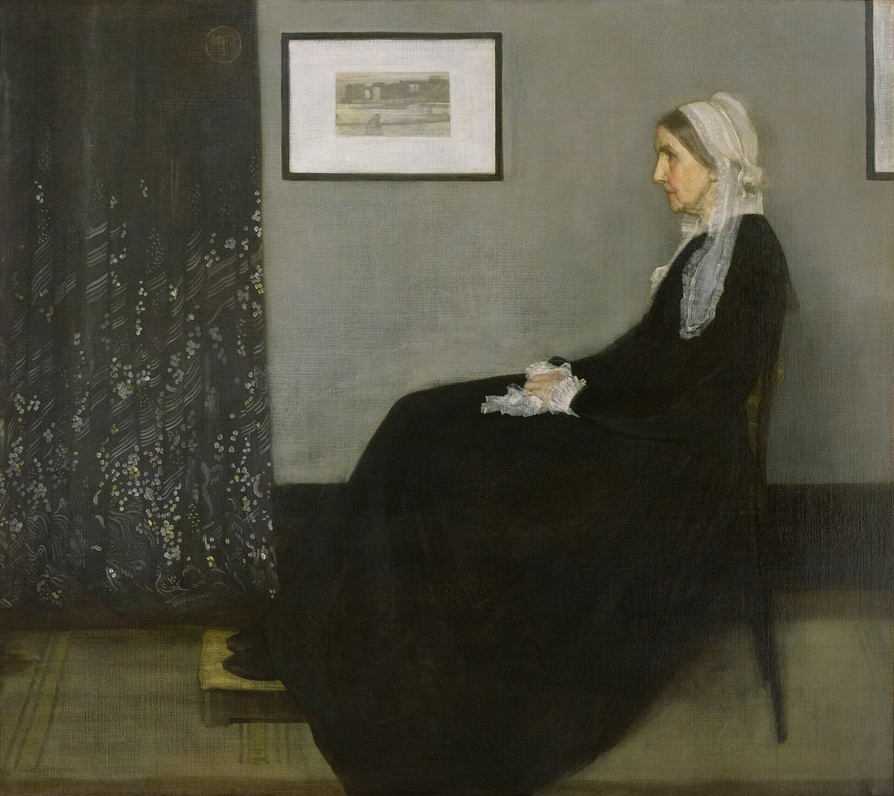

Whistler's Mother

Palette
- Black · your word: Black
- Nickel · your word: Taupe
- Black olive · your word: Gunmetal
- Antique bronze · your word: Umber
- Silver · your word: Silver
- Camel · your word: Camel
Its real title is Arrangement in Grey and Black No. 1. Whistler named his pictures like music, to keep sentiment out of art, and the palette obeys: black, greys and a pale wall, with warm color only in the face and hands. The paint is thin and oily, low in pigment. It was varnished in 1878 for his libel case against Ruskin, and the French state bought it in 1891.
Image
Wikimedia Commons · Public domain

Hex values are screen approximations. Every page lists its sources.